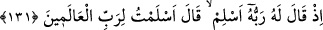

130. İbrâhîm’in dîninden kendini bilmezlerden başka kim yüz çevirir? Andolsun
ki, biz onu dünyâda (elçi) seçtik, şüphesiz o âhırette de sâlihlerdendir.
Âyetin iniş sebebi olarak şu olay rivâyet edilir: Abdullah b. Selâm iki amcaoğlu
Seleme ve Muhâcir’i İslâm’a dâvet etti. Onlara: “Siz de biliyorsunuz ki Allah, Tevrât’ta
şöyle buyurmuştur: “Muhakkak ki ben, İsmâîl (a.s.)’ın soyundan adı Ahmed olan bir
peygamber göndereceğim. Kim ona îmân ederse doğru yolu bulmuş olur. Kim de ona
îmân etmezse lânetlenmiş olur.” der. Bunun üzerine Seleme müslüman olur, Muhâcir
ise muharref yahûdîlikte ayak diretir. Olaydan sonra da Yüce Allah yukardaki âyeti
indirir:
“Andolsun ki biz O’nu dünyâda seçtik. Âhırette de o, sâlihlerdendir.” Allah’a yemin
olsun ki muhakkak biz, İbrâhîm’i dünyâda diğer insanlar arasından hikmet ve nübüvvet
için seçtik. O kıyâmet günü de istikamet, hayır ve iyilikte sabit oldukları husûsunda
şehâdet olunan sâlih kişilerdendir. Dünyâda insanların seçkini olan ve âhırette de sâlih
olduğuna şehâdet edilen kişi kendisine tâbi olunmaya en lâyık olan insandır. Onun
dîninden ancak sefîh olanlar yüz çevirir.
Bu sefîhlik böylelerinin yaratılışında vardır veya yaratılışında olmamakla birlikte,
beyinsizlerin amellerine yaklaşması ve tercih etmesi sebebiyle sonradan kazanılmıştır.
Böylece, bu kişi cehâletle, tefekkür ve teemmülden yüz çevirmekle nefsini zelîl ve hakîr
duruma düşürmüştür. Aynı zamanda “O âhırette de sâlihlerdendir.” ifâdesiyle Hz.
İbrâhîm’e daha dünyâda iken hüsn-i hâtimeyle öleceği müjdesi verilmiş ve bu, kendine
vâdedilmiştir. İlk hallerinde sâlih olan nice insanlar vardır ki, ömürlerinin sonunda iyi
halleri gitmiş ve kötü bir şekilde ölmüşler, âhırette azâba lâyık olmuşlardır. Bel’am,
Bersîs, Karun ve Sa’lebe gibi.
131. Çünkü Rabbi ona: Müslüman ol, demiş, o da: Âlemlerin Rabbine boyun
eğdim, demişti.
Yâni “Dînini sadece Allah’a hâs kıl, İslâm üzere dosdoğru ol ve İslâm’da karar kıl.”
Bu durum Hz. İbrâhîm’in mağaradan çıkıp yıldıza, aya ve güneşe baktığı vakit olmuştur.
Allah Teâlâ bu durumdayken ona ihlâsı ilhâm etmiştir.
“Âlemlerin rabbine teslim oldum, demişti.” yâni dînimi O’na has kıldım, dedi. Tıpkı
şu sözünde olduğu gibi: “Muhakkak ben, yüzümü, yeri ve göğü yaratan Allah’a
çevirdim.” (el-En’âm, 6/79) “Hz. İbrâhîm emrolunduğu teslimiyeti ve ihlâsı, gereğince